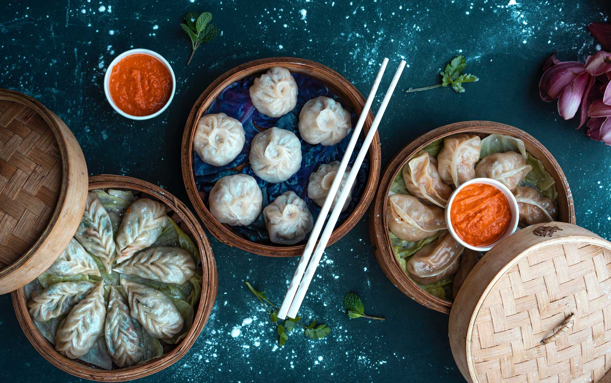

gallery


Sikkimese food is largely based on rice, culinary vegetables from jungle like Ningro (Fern), Nakima (Wild Lily), Baas ko Tusa (Bamboo-Shoot), Cheuw (Mushrooms), etc. Even organic vegetables such as Iskus (Chayote/ Squash), Pharsi (pumpkin), Pharsi ko Munta (Pumpkin leaves), Iskus ko Munta (Chayote/ Squash leaves), Kinema (Fermented Soyabean), Ruk Tamatar ( Tree Tomato) and Dalle Chillies (Hot Fire Balls), etc are also extensively used in day to day menu.
Gundruk is particularly popular among Nepali community and the production is carried out at the household level. Gundruk is obtained by fermenting and drying leafy vegetables such as Rayo sag (Brasicca rapa spp.campestris variety cuneifolia), Toriko Sag (leaves of mustard), Mulako Sag (radish leaf) and Banda kopi (cauliflower) to produce a sour brownish black product..............Know more.
Method_ Prepare the Filling_ Heat oil in a pan, add onion and sauté till it turns translucent. Add ginger-garlic paste, and stir it well till the raw smell goes away. Add minced chicken, saute it well (it will turn like scrambled egg) and allow it to cook (if needed sprinkle some water). Once it is almost cooked, add black pepper powder, salt, soy sauce and saute few minutes. Now add Coriander leaves, chopped green chillies, chopped spring onions and mix well...............Know more.
Momo are bite-size dumplings made with a spoonful of stuffing wrapped in dough. Momo are usually steamed, though they are sometimes fried or steam-fried. Meat or vegetables fillings becomes succulent as it produces an intensively flavored broth sealed inside the wrappers. Momo is an important dish for Tibetans, both for everyday and festivals...............Know more.
Thukpa is a hot noodle soup made with mixing vegetables and/or chicken and goes well with the cold weather of northeastern Indo-Tibetan border region. It is very famous in the States of Sikkim. The vegetables used in the preparation are fairly common such as mushrooms, cabbage, onion etc so I thought why not enjoy this great taste at home...............Know more.
Get Email updates about our special places.